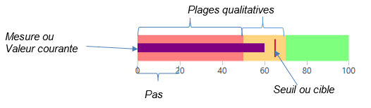

L'objet jauge se présente comme une extension de l'objet graphique.
C'est contenu de la chaine hmp descrivant l'objet qui détermine le passage en mode jauge (présence de la balise <HOJ>)
Avertissement : le "mode jauge" est exclusif : dès lors que la balise <HOJ> est détectée, l'objet est interprété comme une jauge et les commandes standard de l'objet graphique deviennent inopérante.
Structure d'une jauge :
Contrairement à l'objet graphique standard, la chaîne hmp d'une jauge ne décrit pas les figures dessinées, mais la structure de données dont la jauge est la représentation.
Cette structure contient, entre autres :
- la description de l'axe (visibilité, pas)
- la valeur maximum (par défaut 100)
- la description des plages qualitatives (début, fin, couleur)
- la description de la cible et de la valeur courante
